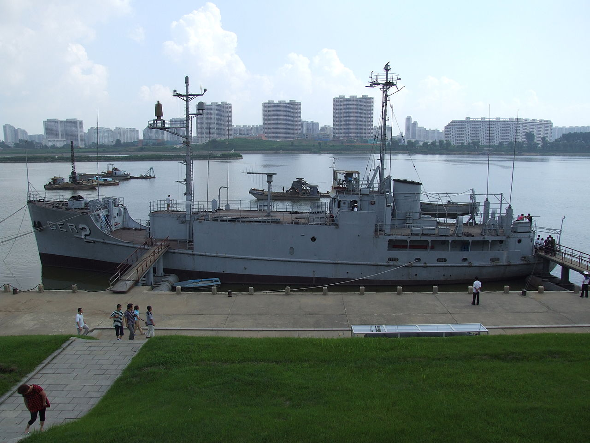
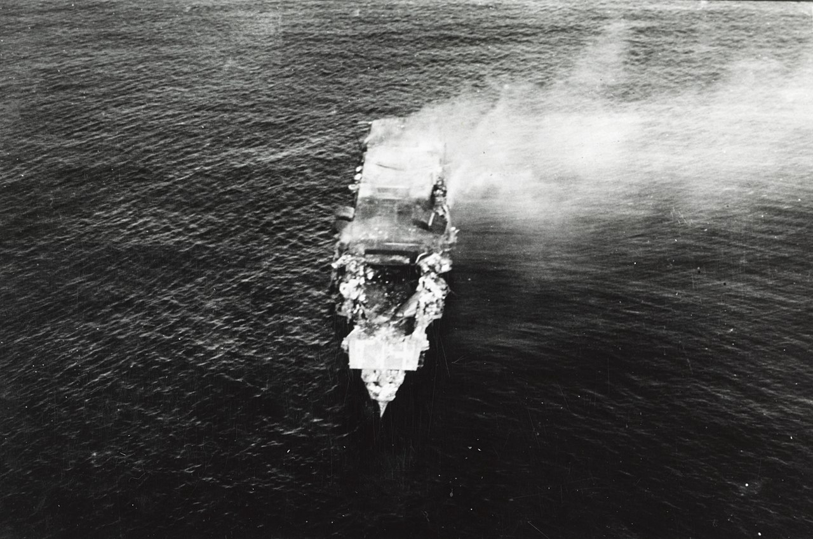
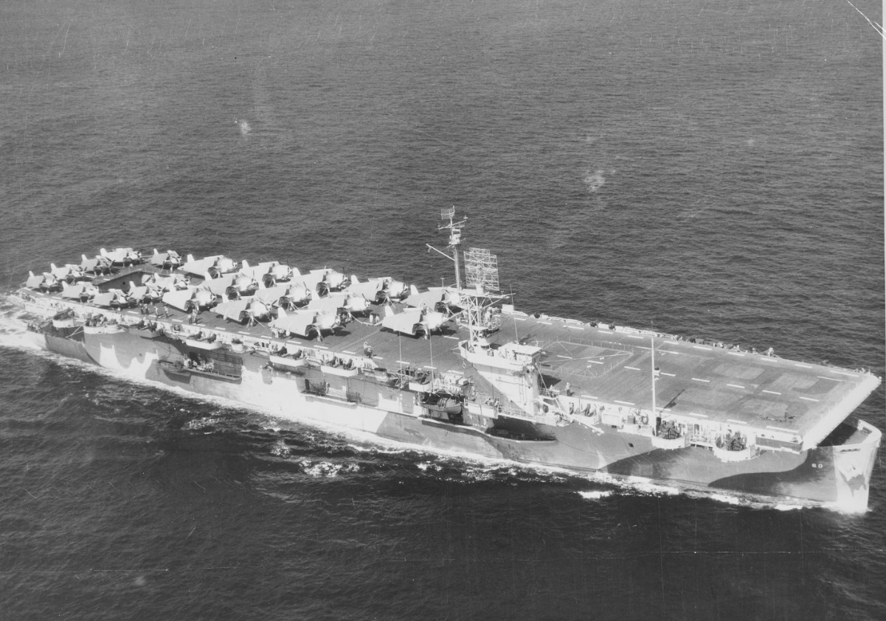
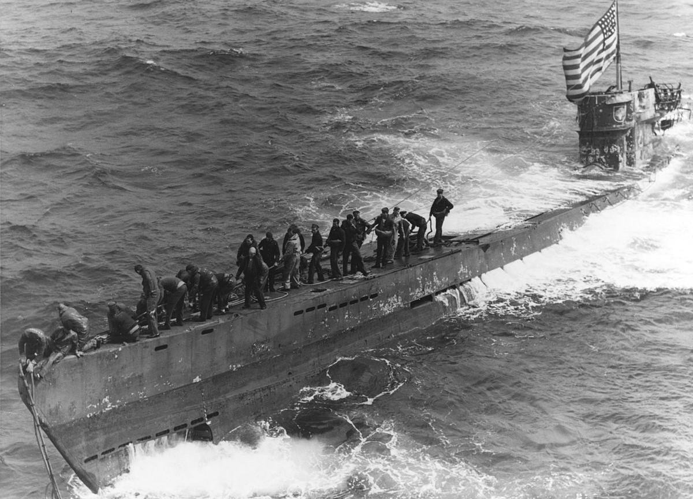
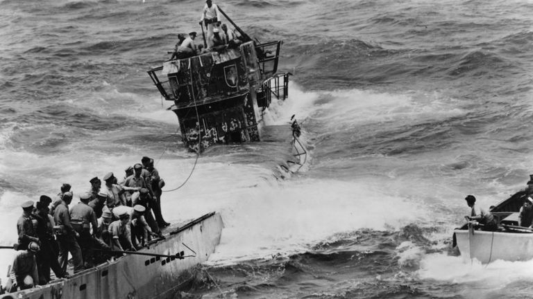
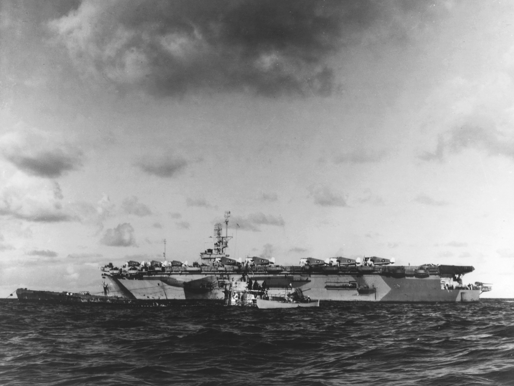
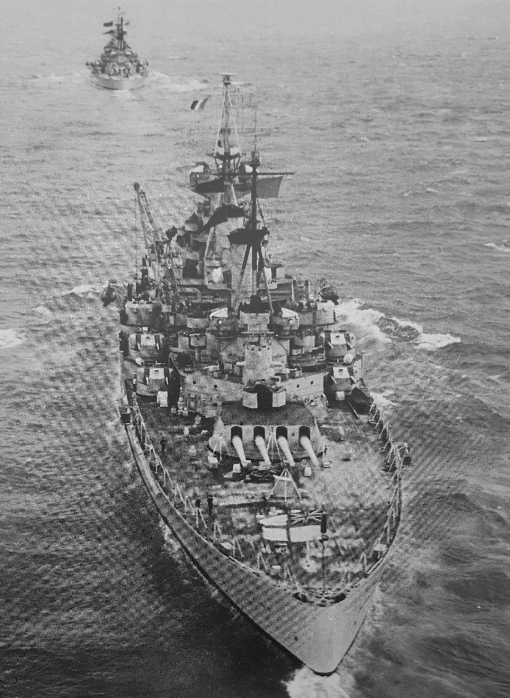
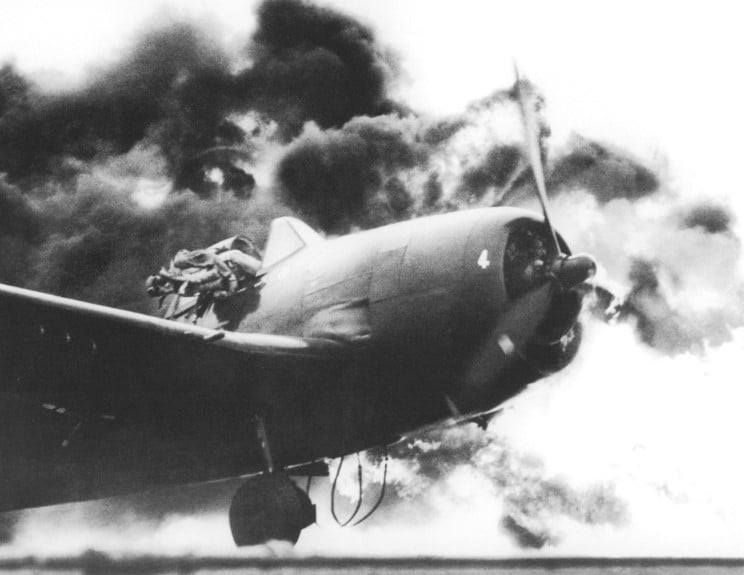

항공모함 잡담 (7/15)
게시: 2021-07-15T06:30:33+09:00
<뭐? 미해군이 배를 빼앗겨?> 20세기 들어서 미해군이 적에게 나포 당한 군함은 딱 2척. 그 중 하나는 1942년 필리핀 코레히돌 요새에서 일본군의 폭탄 공격에 손상을 입고 침몰했던 950톤짜리 소해정 USS Finch (AM-9). 이 배는 분명히 침몰했었는데 얕은 바다에 침몰했던지라 일본군이 건져내어 순찰선으로 사용. 그래서 이게 진짜 나포 당한 것인지는 잘 모르겠으나 아무튼 나포 당한 군함으로 기록됨. 변명의 여지 없이 진짜 나포된 배는 바로 정보 수집함 USS Pueblo (AGER-2). 1968년 북한 해군에게 나포됨. 83명의 승조원 중 1명은 이 과정 중 사살되고 나머지는 모조리 포로가 됨. 김신조가 박정희 죽인다고 청와대 습격한지 3일 후 벌어진 일. 이 군함은 현재 평양 보통강변에 박물관으로 정박되어 있음. 심지어 보존 상태도 좋음. 미군도 이를 치욕으로 여기고 아직도 현역 군함 리스트에 그대로 유지. 현재 나포 상태인 유일한 미국 군함. ** 당시 나포되었다가 가혹한 대우를 받고 고생했던 미군들과 그 가족은 미국 법원에 부칸 정부를 상대로 가혹 행위에 대한 손해 배상 소송을 걸었고, 2008년 (왜 이렇게 오래 걸렸지?) 마침내 승소하여 6천5백만불을 보상받게 됨. 2021년 2월에는 다시 23억불을 보상하라는 판결도 나왔으나, 이 돈을 부칸에게서 어떻게 받아내느냐는 아직 실마리를 못 찾고 있다고. ** 동해안에서 잡은 푸에블로 호를 어떻게 평양 보통강변까지 끌고 갔을까 하는 의문이 들기는 함. 아마 분해한 뒤 내륙 철도를 통해 옮겼지 않을까 싶은데...

<왜 자기편 항모에 어뢰를?> 1942년 미드웨이 해전에서 일본 해군은 4척의 항모를 상실, 그러나 실제 미군에 의해 격침된 것은 하나도 없고, 화재와 폭발로 자력 항행을 못하게 되자 모두 일본 구축함이 쏜 어뢰에 자침(scuttle) 된 것. 1) 왜 전함 같은 큰 배들로 끌고 가지 않았을까? 항모는 워낙 크고 무겁기 때문에 전함처럼 큰 배로 끌고 가더라도 전함의 속도까지 뚝 떨어질 수 밖에 없음. 그랬다가는 멀쩡한 전함까지 적의 잠수함이나 폭격기에 걸려 꼬로록 당하는 수가 있기 때문. 2) 그렇다고 비싼 어뢰까지 써서 굳이 자침을 시킬 필요가? 우리 편이 못 끌고 갈 거라면 적도 똑같이 못 끌고 갈 것이고 또 우리 편에게 고철 노릇 밖에 못한다면 적에게도 똑같이 무쓸모일텐데 왜 굳이 자침을? 혹시 적이 끌고 가서 전승 기념비로 쓰는 치욕을 피하고자? 그런 것도 있겠으나 더 큰 이유는 정보 보호 때문. 항모에는 수많은 승조원이 타고 개인 소지품과 각종 기록물이 많으며, 탑재한 물자와 탄약, 장비 등이 엄청나게 많음. 그런 것들 자체도 다 군사 정보이지만 더 결정적인 것은 각종 암호 코드집과 무선 통신 장비, 그리고 기밀 서류들. 불이 나고 기울어가는 항모의 난장판 속에서 그런 것들을 다 폐기처분 한다고 하더라도 확실히 다 없앴다고 누가 자신할 수 있겠음? 확실하게 없애버리는 방법은 오직 하나, 바다 깊은 곳으로 침몰시키는 것 뿐. ** 사진은 마지막으로 살아남았다가 미군기에게 폭격당해 활활 불탄 뒤 결국 자침되기 직전의 일본 항모 히류.

<미해군이 129년 만에 마침내...> 1944년 6월, 서부 사하라 해안 인근에서 Casablanaca급 호위항모인 USS Guadalcanal (CVE-60)이 이끄는 U-boat 사냥 그룹이 독일 잠수함 U-505를 포착. 과달카날에서 발진한 2대의 F4F Wildcat 전투기의 도움을 받은 호위 구축함들이 폭뢰로 U-505를 강제 부상시킨 뒤, 호위 구축함들이 이를 둘러싸고 온갖 구경의 기관포과 5인치 포로 2분간 다구리를 놓던 중 U-505 승조원들이 햇치를 열고 탈출을 시작하는 것이 목격됨. 이에 과달카날의 함장 Gallery 대령은 '가능한 한 격침시키지 말고 나포하라'는 명령을 내렸고 결국 보트로 접근한 미해군 수병들이 텅빈 잠수함에서 각종 기밀서류와 함께 독일군의 암호 장비 Enigma를 손에 넣음. 이어서 U-505에 견인줄을 매달아 무려 4천 km를 끌고 가서 카리브 해 버뮤다까지 끌고 감. 이것이 1815년 이후 129년 만에 미해군이 적함선을 나포한 사건이고, USS Guadalcanal은 대통령 부대표창을 받고 함장 Gallery 대령도 무공훈장(Legion of Merit)을 받음. 현재 U-505는 시카고 과학산업 박물관에 그대로 전시 중. ** 그러니 '동해안에서 잡은 푸에블로 호를 어떻게 평양 보통강까지 끌고 갔지?' 라는 의문은 가지지 말자. 미국 애들은 그보다 더 큰 U-boat를 훨씬 더 먼 내륙지방인 시카고까지 끌고 갔다.
   
<전함의 관뚜껑에 못질을 한 것은 항공모함이 아니다> 아래 사진은 KGV급 전함의 네임쉽인 HMS KING GEORGE V, 1948년 10월 프랑스 국기를 달고 프랑스 해군과 NATO의 전신인 Western Union 합동 훈련을 하는 모습. 이때까지만 해도 서유럽 국가들은 전함이 소련에 대항하기 위해 필요하다고 생각. Western Union 국가들은 소련과의 전쟁 발발시 전함을 몇 척씩 내놓을 수 있는지 밝힐 것을 요구 받았고, 영국은 KGV급 2척을 내놓겠다고 선언. 그 약속을 지키기 위해서 4척의 KGV급 전함을 모두 유지. 그러나 핵무기가 속속 도입되면서 전함이 무슨 도움이 되는가에 대해 회의감이 들기 시작. 핵무기가 가지는 억지력 때문에 소련과의 전면전이 비현실적인 시나리오가 되면서 해군은 차라리 먼 해외의 제3 세계 국가에서의 저강도 분쟁을 지원하는 것이 주임무가 되었는데, 그런 분쟁에서는 저런 뚱땡이 전함보다는 소규모 항모-순양함 전대가 더 효과적이라고 1957년 영국 Defence Review에서 결론이 남. 그래서 1957년 4척의 KGV급 전함이 모조리 도살장으로 끌려감.

<Arrest wire를 이용한 착함의 어려움>
1944년 USS Ticonderoga's (CV-14)의 시험 운항 당시 F6F Hellcat이 착함하다 사고로 화염에 휩싸인 뒤, 조종사인 John G. Fraifogl 소위가 탈출하는 장면. Fraifogl 소위는 얼굴에 1도 화상, 어깨와 엉덩이, 목 등에 2도 화상을 입음. 그러나 결국 다시 현역에 복귀하여 WW2에서 여러대의 일본기를 격추. 종전때까지 살아남음.
확인 안 된 통계지만 WW2에서 미해군 조종사들의 사상자 중 전투에서 일어난 사상자 수보다 이착함 중에 일어난 비전투 손실 수가 더 많다고함. 그만큼 항공모함에서 arrest wire를 이용한 착함이 어렵다는 이야기. 과연 우리나라 해군이 수직 이착륙기를 이용하는 STOVL(Short Take OFF Vertical Landing) 경항모가 아니라 catapult와 arresting gear를 이용한 CATOBAR(Catapult Assisted Take-Off But Arrested Recovery) 정규 항모를 갖춘다면, 그 비싼 함재기와 조종사에게 종종 일어날 저런 사고들을 견딜 수 있을까. 미해군도 1980년대 중반까지 온갖 이착함 사고가 끊이지 않다가 FA-18 Hornet 도입 이후에야 이착함 사고율이 지상기지 발진 항공기 수준으로 줄어들었다고...
